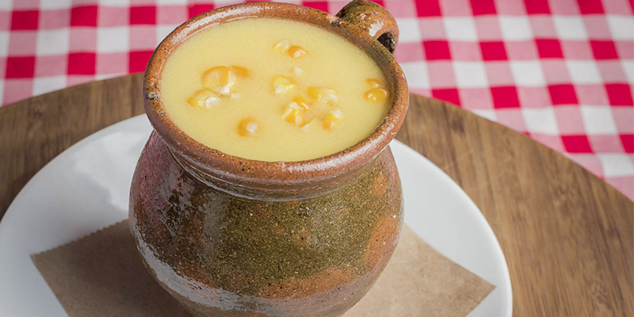

Atol de elote
una bebida tradicional y reconfortante de la cocina guatemalteca: el atol de elote. Esta deliciosa bebida, hecha a base de maíz tierno y otros ingredientes aromáticos, es una verdadera delicia que te transportará directamente a los sabores auténticos de Guatemala.
El atol de elote se prepara cocinando maíz tierno junto con leche, canela, clavo de olor, azúcar y a veces un toque de sal. Esta mezcla se cocina a fuego lento hasta que el maíz esté tierno y la mezcla se haya espesado, creando una bebida cremosa y reconfortante con un sabor dulce y aromático.
Nuestro atol de elote está elaborado con ingredientes de la más alta calidad para garantizar un sabor auténtico y delicioso. Es perfecto para disfrutar como desayuno, merienda o incluso como postre, y es una excelente manera de disfrutar del sabor único y reconfortante del maíz tierno guatemalteco.¡No pierdas la oportunidad de deleitarte con esta bebida tradicional y sabrosa que te hará volver por más una y otra vez!
esta disponible por tan solo a Q5.00 el vaso
